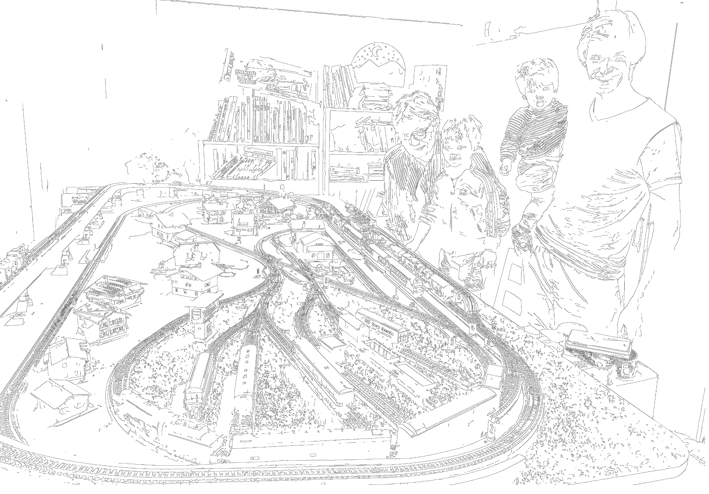
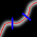
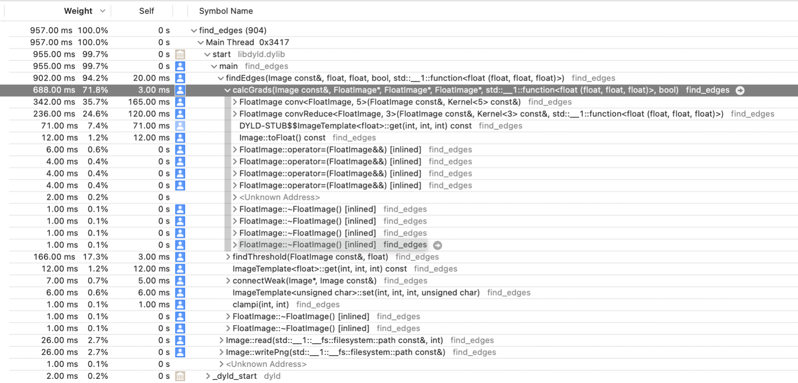

Revisiting Canny's Edge Detection Method
Sunday, January 9 2022TLDR: I created an app that detects edges and removes color so you can turn any image into a coloring picture. You can try it here: http://decolorizer.art. The source code can be found on my github page.
My kids love to color pictures of cars, robots, dragons, cats, etc. Usually googling something like "cars coloring" delivers good coloring pictures that they like but sometimes they want to color something specific like a cartoon character. I remembered some edge detection techniques from an image processing class that I took back in colleague but I never implemented a full edge detector myself. So I decided that this would be a great opportunity to do it. I ended up using a method called "Canny's Edge Detector" (developed in 1986!) because it works well in many cases and is realtively straight forward.
"Wait, you should really train a convolutional neural network! Because edge detection is not a well defined problem and you can train it to detect edges for features that matter for human perception" You might say, but to train a conv net you need training data and a classical method can generate preliminary images that you can manually refine to create a good training set. Furthermore I still like classical algorithms because once you understand them you are in full control. If you are using an artificial neural network on the other hand you often have to revert to empirical methods to figure out what is going on. Anyways I hope I will find some time in the future to do this...
The result works very well on images that have clear, simple shapes with high contrast. Especially drawings, here is an example (source):
Toys also work very well, here is a Lego car:
Finally it also works somewhat well on photographs, however human features are not always captured well (my eyes for example):

Canny's Method
Canny's method consists of the following steps:- Apply Gaussian filter to smooth the image and remove noise.
- Find the gradient magnitude (that is the rate of change) of the image.
- Apply non-maximum suppression to only keep the highest peak of the gradient.
- Apply a higher threshold to filter out edges of low intensity.
- Finally also apply a lower threshold pixels that are greater or equal to the lower threshold are only kept if they are connected to pixels from the higher threshold. Both thresholds need to be determined individually for each image.
Gaussian filter
This is the same functionality that lets you "blur" an image in Photoshop. It works by "convolving" a Gaussian filter with the image. Roughly speaking a convolution is simply a weighted sum of a pixel and its neighboring pixels with the values of the filter. When convolving an image with a filter the filter is moved over the image and the weighted sum is calculated for every pixel. Andrej Karpathy created a nice illustration that shows what's happening when convolving a filter with an image.
Approximating gradients with Sobel's Filter
To find horizontal gradients I used Sobel's filter. Below you can see the horizontal version, the vertical version is just rotated by 90 degrees:
1 0 -1
2 0 2
1 0 -1
The thing to know about Sobel's filter is that it includes smoothing the image as well. The two on the second row comes from the convolution with the smallest Gaussian kernel and the filter that does the actual edge detection is just 1 0 -1:
( 1 2 1) 1 0 -1
0.5 (1 0 -1 * 2 4 -2) = 2 0 -2
( 1 2 1) 1 0 -1
If you struggle with the math, this presentation has a step by step guide.
Approximating derivatives with such as simple filter works because the pixels before and after the pixel in question are weighted with opposite signs. If they have the same value they cancel each other out, if they differ the derivative will be the magnitude of their difference. Consider the following 1D example:
>>> np.convolve([1, 2, 7, 7, 3, 1], [1, 0, -1])
array([ 1, 2, 6, 5, -4, -6, -3, -1])
Note that by the definition of the convolution you have to multiply the signal with the flipped kernel (-1 0 1), the reason for flipping is that it makes writing mathematical proofs easier. If you are interested in the details see chapter 9.1 from the Deep Learning book by Goodfellow et al. Numbers outside of the array boundaries are assumed to be zero in the example above.
It is common to assume that these pixels outside of the border are just zero (black). However setting them to zero will give you an artificial gradient if the border pixels are non-zero. Considering that many images have a white background this means that they all would get an artificial gradient frame. To prevent this I instead simply reused the pixel value of the border pixels for the pixels that would lie outside of the image. To keep the code readable I invented a function called clampi(...) which clamps the calculated indexes into a valid range. The images below show the effect: On the left is the test image, in the middle and on the right are the vertical gradients calculated with off-border pixels set to zero (middle) and reusing the border values (right).
Non-maximum suppression (NMS) and thresholding
When I first read the term it sounded kind of confusing to me. What is actually being suppressed? But what's being done is exactly what the term says: Every non-maximum pixel is suppressed (set to zero) along the +/- direction of the gradient. NMS turns the gradient into a single one-pixel edge. The image below illustrates what NMS does. The gradient is drawn in white (the brighter the color the higher the value) and the highest values are marked in red. The gradient direction is also shown at two points in blue:

NMS allows us to find the red line from the gradient magnitude and direction by applying the following rule: For each pixel check its two neighboring pixels in direction of the gradient and set it to zero if it is not bigger than the its neighbors. Wikipedia recommends to use atan2(gx, gy) to calculate the gradient angle from the x and y directions but if you work this out on paper you can see that it's enough to look at the magnitudes of x and y and the signs to decide which pixel to use from the 8 pixel neighborhood. The resulting code is relatively simple.
Performance Improvements
After an initial implementation I ran the profiler to see which function takes the most time:

The convolution operations for blurring and gradient calculation in calcGrads(...) took most of the time. I first replaced the get(...) and set(...) operators on the images with raw pointers and then added the restrict keyword to tell the compiler that the pointers for reading and writing do not alias each other. At this point I did not use separable convolutions for blurring. The improvement of adding the restrict keyword was quite dramatic:
Before restrict:
build_release 🍎 ./tests ../large_test_images/giant_ninjago_bike.png
TestMakeRed [OK]
PngReadWrite [OK] out: /tmp/test_rw_7M8a7W.png
TestBlur [OK] out: /tmp/test_gauss_GVVqwP.png 0.407196 secs
TestSobel [OK] out: /tmp/test_sobelx_ymOdMm.png 0.282892 secs
TestSobel [OK] out: /tmp/test_sobely_zztFK6.png 0.271711 secs
After adding restrict:
build_release 🍎 ./tests ../large_test_images/giant_ninjago_bike.png
TestMakeRed [OK]
PngReadWrite [OK] out: /tmp/test_rw_S69ZcS.png
TestBlur [OK] out: /tmp/test_gauss_kkf2Vn.png 0.125446 secs
TestSobel [OK] out: /tmp/test_sobelx_UZHluw.png 0.077663 secs
TestSobel [OK] out: /tmp/test_sobely_HrPy0l.png 0.068909 secs
Around a 4x improvement! Interestingly this helped more than the algorithmic improvement I made afterwards: A matrix is called separable if it can be decomposed into a product of row and col vectors. For example the horizontal Sobel operator can be decomposed as follows (@ is the outer product):
1 0 -1 1
2 0 -2 = 2 @ 1 0 -1
1 0 -1 1
If we convolve with two separate kernels instead of one the time complexity of the convolution operation decreases from O(N*M*P) to O((N + M)*P) where N and M are the dimensions of the convolutional filter and P the number of pixel values in the image. This is at the expense of one temporary image that needs to be created and two passes over the whole image instead of one. In theory these constant factors do not matter but note that P, the number of pixel values, is much higher than N and M (which are just 3 for Sobel's filter).
After implementing the separable convolution I re-ran my tests again and found the following timings (on a large test image):
blur [OK] out: "test_gauss_xjRynJ.png" 0.122562 secs
blurSep [OK] out: "test_gausssep_7qnLQo.png" 0.078832 secs
sobelX [OK] out: "test_sobelx_rjT6c1.png" 0.046457 secs
sobelXSep [OK] out: "test_sobelxsep_ahoma9.png" 0.051046 secs
This is quite an improvement for the "blur" test but Sobel's filter is even slower! Sobel's filter is 3x3 and the Gaussian filter used in the Blur test is 5x5 pixels. It turns out that the difference between the square (9) and the sum (6) of the dimension of Sobel's filter is not enough to make up for the additional constant factor required to run the two 1D convolutions. For larger filters (such as the 5x5 Gaussian) it pays off to use separate convolutions, because the difference between the square and the sum of the dimensions is larger.
I suspect that convolutions can be way faster still, even when just using the CPU. But so far I could not find the time to study the memory access patterns and hand write SIMD intrinsics.
Graphical User Interface
The app linked above is created with Sokol, specificallysokol_gfx and sokol_app. The first is a small wrapper around modern graphics APIs (OpenGL, Metal, Direct-X, WebGL, etc), that allows you to write code once and run it on multiple platforms including the web! sokol_app provides all the rest that is needed for an app to run: Application entry, a window for 2D/3D rendering, mouse, keyboard and touch input, etc. What's also cool about Sokol is that it is written in simple C (C99 to be precise) which makes the code easy to read and fast to compile. The author as a few blog posts where he explains the rationale for using C and the design behind Sokol. My favorite is "One Year of C" since I also suffered quite a lot from the (unnecessary) complexity C++ brings.
To actually draw the UI I used ImGUI another super cool library worth a look.